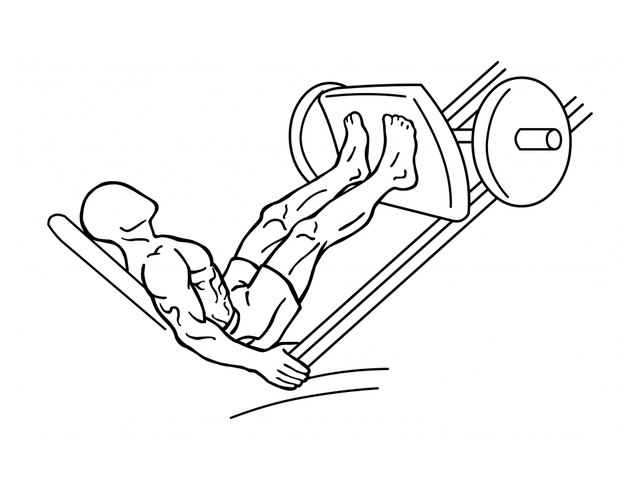

Máquina de prensa
Prensa de piernas
Músculos trabajados: Cuádriceps y glúteos; participan otros músculos de la pierna.
Es un empuje de piernas con el torso apoyado. Permite practicar la extensión de cadera y rodilla con una trayectoria guiada.
- Series
- 3
- Repeticiones
- 8–12
- Descanso
- 2–3 min
- Margen orientativo
- 2–3 RIR
Ejemplo de partida: adapta la carga a tu técnica y experiencia. Las series de calentamiento no se cuentan aquí.
Cómo hacerlo
- Ajusta el respaldo y coloca los pies en la plataforma, separados de forma cómoda.
- Mantén espalda y glúteos apoyados. Revisa el mecanismo de seguridad de la máquina.
- Flexiona las piernas lentamente hasta un recorrido que mantenga los talones apoyados y la pelvis estable.
- Empuja la plataforma sin despegar los glúteos y sin bloquear bruscamente las rodillas. Regresa despacio.
Errores que conviene evitar
- Bajar tanto que se redondea la zona lumbar.
- Despegar los talones.
- Bloquear o hiperextender las rodillas.
La ilustración muestra una prensa inclinada. Ajusta el asiento, el recorrido y los seguros a la máquina que utilices.
Referencia de técnica: ACE: Leg Press. Cómo interpretar las series y el RIR.